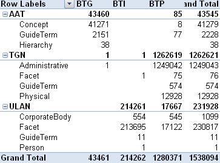
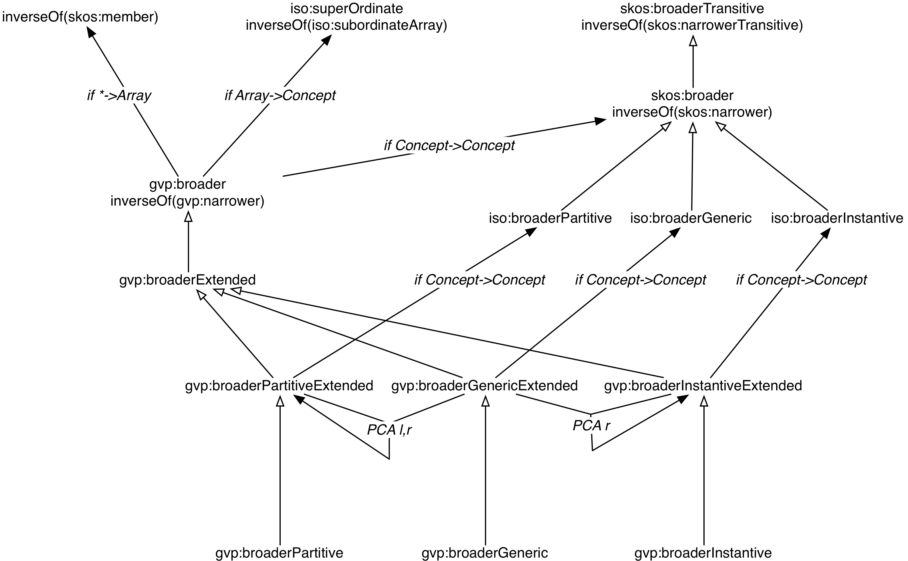
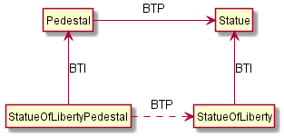

On Compositionality of ISO 25964 Hierarchical Relations (BTG, BTP, BTI)
Table of Contents
BTG, BTP, BTI
KOS have used different kinds of hierarchical relations for a long time:
| Relation | Abbr | Name | Example |
| broaderGeneric | BTG | Genus/Species Relation | mineral BTG inorganic material (AAT) |
| Iceland spar BTG calcite (AAT) | |||
| broaderPartitive | BTP | Part/Whole Relation | Tuscany BTP Italy (TGN) |
| broaderInstantial | BTI | Kind/Instance Relation | Rembrandt van Rijn BTI person (ULAN) |
| SG Dynamo Dresden BTI football clubs (GND) |
Use of BTG, BTP, BTI in Thesauri
Examples:
- Deutsche Nationalbibliothek: Gemeinsame Normdatei Ontology
- gndo:broaderTermInstantial (see Dynamo Dresden in Linked Data Service)
- Some vocabs in xTree (vocnet.org) by digiCULT-Verbund eG
- FinnONTO SKOS Extensions (Aalto University)
- WordNet, with BTP distinctions: member vs part vs substance meronym/holonym
- ISO 25964 Ontology: officially formalized (as "step" properties)
- Most recently, Getty Vocabulary Program (GVP) LOD
- First industrial application of ISO 25964
- Many examples in this presentation are from GVP
Definitions in ISO 25964
- BTG: amenable to logical all-and-some test
- Children should all be a type, or kind of the parent
- From the parent's point of view, it encompasses only some of any given child
- Can be concluded it's comparable to rdfs:subClassOf (isA): transitive
- BTP: part of entity/system belongs uniquely to particular possessing whole in any context
- The part may not belong to more than one whole, and BTP has to be universally valid
- AAT Guidelines: "Each child should be part of the parent and all ancestors above it" (transitive)
- BTI: individual instance to general class
- Instances often represented by proper name (also called "classes of one")
- Instances may not have further BTI nor BTG
- But may be further subdivided: use custom relationship (BTX), eg BTS (subdivision)
GVP Hierarchical Relation Counts

GVP Hierarchical Relations
- AAT: most are BTG, but there is a variety of BTP:
- (C) BTP (C): calendars of relics BTP cabinets of relics
- (C) BTP (G): anvil components BTP
- (G) BTP (C):
BTP jewelry - (G) BTP (G):
BTP - (C) BTP (H): building divisions BTP Single Built Works
- TGN: all are BTP
- placeType: in the current TGN LOD (2.0) has no relation to BTI
- May reconsider and make it subprop of BTI, see TGN Place Type Relation discussion paper
- ULAN: most are BTI, e.g. Rembrandt (ULAN) Persons facet (ULAN)
- May consider more specific, eg Rembrandt (ULAN) BTI Painters (AAT)
- Some BTP, e.g. corporate body BTP another corporate body
GVP Hierarchy Structure
- Subjects include (C)oncepts; but also: (F)acets, (H)ierarchies, (G)uide Terms
- Not for indexing, only to structure. Implemented as iso:ThesaurusArray
- G and C can be intermixed: F>H>(G|C)

SKOS/ISO vs GVP Impedance Mismatch
- SKOS and ISO define Standard Hierarchical Relations
- Only between Concepts
- skos:broader, iso:broaderGeneric, etc
- We define custom GVP Hierarchical Relations
- Connect the hierarchy uniformly
- gvp:broader, gvp:broaderGeneric, etc
- We infer appropriate standard relations when they connect concepts directly
- Notice the "thread-through" skos:narrower in the prev diagram
Problem Statement
What are the appropriate combinations (compositions) of BTG, BTP, BTI?
- Matters with respect to appropriate closure for information retrieval
- It's a prerequisite for sensible search expansion
- Has not been systematically analyzed to date
The problem with broaderTransitive
ISO 25964 formalized BTG, BTP, BTI as sub-properties of skos:broader
- skos:broader contributes unconditionally to skos:broaderTransitive
(broaderGeneric|broaderPartitive|broaderInstantial) => broader => broaderTransitive - Ambiguities in representing thesauri using extended SKOS - examples from real life (NKOS 2012):
broaderTransitive should be established only for BTG and BTP, but not for BTI, nor mixed paths BTG+BTP - skos:broaderTransitive may include semantically inappropriate statements
- a place inherits all place types of its parents
- eg: Sofia BTP Bulgaria BTI country => Sofia BTI country
- Lively discussion at SKOS mailing list from Nov 2013 to April 2014
The Time Has Come!
We have to resolve this issue for GVP LOD representation:
- To infer appropriate thread-through standard relations
- Makes sense to represent TGN place types and ULAN actor roles as BTI
- But skos:broaderTransitive causes confusion and bloat (100M=>400M statements)
- So we want to infer only appropriate compositions (see BTG, BTP, BTI Inference)
- BTGE, BTPE, BTIE (gvp:broaderGenericExtended, gvp:broaderPartitiveExtended, gvp:broaderInstantialExtended)
- Their disjunction gvp:broaderExtended
- (Also gvp:broaderPreferred and gvp:broaderPreferredExtended)
BTG, BTP, BTI Compositionality
- Basic decision table. BT*x means BT*|BT*E
| BTGx | BTPx | BTIx | |
| BTGx | BTGE | BTPE | no |
| BTPx | BTPE | BTPE | no |
| BTIx | BTIE | no | no |
- BTG=>BTGE, BTP=>BTPE, BTI=>BTIE: basic inferences
BTG, BTP, BTI Compositionality (2)
- BTGx/BTGx=>BTGE
- If X is kind of Y and Y is kind of Z then X is kind of Z
- Eg: racehorses BTG
BTG Equus caballus => racehorses BTGE Equus caballus
- BTGx/BTPx=>BTPE
- If X is kind of Y and Y is part of Z then X is part of Z (X can play the role of Y)
- Eg: beak irons BTG anvil components BTP
beak irons BTPE
- BTGx/BTIx=>n/a
- A generic concept may not be hierarchically subordinate to an instance.
- The understanding of instance, as described in ISO, excludes this composition
BTG, BTP, BTI Compositionality (3)
- BTPx/BTGx=>BTPE.
- If X is part of Y and Y is kind of Z then X is part of Z (Z can play the role of Y)
- Eg: anvil components BTP
BTG => anvil components BTPE
- BTPx/BTPx=>BTPE
- If X is part of Y and Y is part of Z then X is part of Z
- Eg: Sofia BTP Bulgaria, Bulgaria BTP Europe, so Sofia BTP Europe
- But see mereological exceptions/imprecisions below!
- BTPx/BTIx=>no
- Counter-example: Sofia BTP Bulgaria BTI country. But Sofia is no country
BTG, BTP, BTI Compositionality (4)
- BTIx/BTGx=>BTIE
- If X is instance of Y and Y is kind of Z, then X is instance of Z (Z can play the role of Y)
- Eg: Mt Athos BTI orthodox religious center BTG Christian religious center => Mt Athos BTIE Christian religious center
- BTIx/BTPx=>no
- Counter-example: Statue of Liberty pedestal BTI pedestals BTP statues. That particular pedestal is neither BTI nor BTP statues in general
- But see "beyond paths" below
- BTIx/BTIx=>n/a
- An instance as a class of one cannot have instances
- But see BTI Elaborations below
Usage: Inferring ISO relations

Inferring ISO relations

Inference Dependencies
 (A bit simplified, see GVP Hierarchical Relations Inference)
Usage 2: Query Expansion in Information Retrieval
The main purpose of a proper broader relation is to enable query expansion in information retrieval, eg:
- Sofia BTP Bulgaria BTP Europe => Sofia BTPE Europe
- Enables a search for places in Europe to also find Sofia
- Mt Athos BTI orthodox religious centers BTG Christian religious centers BTG religious centers => Mt Athos BTIE religious centers
- Enables a search for religious centers to also find Mt Athos
Usage 3: Beyond Chain Inferences
If X necessary BTP Y and Z BTI X and T BTI Y then Z BTP T

Usage 3: Beyond Chain Inferences
If X necessary BTP Y and Z BTG Y then X BTP Z

Usage 4: Quality Checking

- "swell boxes" BTG "organ components" BTP "organs (aerophones)" => BTPE
- "swell boxes" BTG "organs (aerophones)" is asserted in error
- Can catch it if we declare BTGE & BTPE as owl:disjointProperty
- But is this true in all cases?
BTP Imprecisions
- Mixing partial vs full inclusion; and physical vs administrative:
Netherlands Antilles BTP Netherlands BTP Europe ??

- was until 1954: is in TGN with historic date qualification
- sample query: Places Outside Bounding Box (Overseas Possessions)
BTP Imprecisions (2)
- Mixing Partial vs full inclusion:
Istanbul BTP Turkey BTP Asia
 How about Istanbul BTP Europe? It does straddle the Bosphorus strait:
How about Istanbul BTP Europe? It does straddle the Bosphorus strait:

BTP Imprecisions (3)
- Mixing member vs substance meronym:
chicken feet BTP chicken BTP chicken soup ?? - Mixing intrinsic vs extrinsic BTP; and categories (person vs group):
Mick Jagger's BTP Mick Jagger BTP The Rolling Stones ??
Mereology is a complex topic spanning: philosophy, mathematical logic, theoretical computer science, physics, Sheaf, Topos, or Category Theory, object-oriented programming.
BTI Elaborations
- Metaclasses in OOP and Punning in OWL allow classes of classes, and use them profitably
- ISO: instance may have parts/subdivisions, recommends custom relation BTX (eg BTS=subdivsion)).
Eg "BMW E87" BTS "BMW 1 Series" BTI "Automobiles" - Biological classification: concepts belong to different levels (taxonomic ranks).
Eg Secretariat (ULAN) BTI racehorses BTG Equus caballus BTI species
BTI in Taxonomic Relations

Do Individuals Belong in a Thesaurus?
- TGN gave up placeType
- If you exclude BTI then broaderExtended coincides with broaderTransitive:
BTG* | (BTG|BTP)* = (BTG|BTP)*- Some CRM SIG members: "Individuals don't belong to a thesaurus. Mixing individuals and generics is logically inconsistent"
- Eg in Getty LOD: tgn:7009977 London is gvp:adminplaceconcept, gvp:subject, skos:concept
- Separate node tgn:7009977-place is schema:Place, wgs:SpatialThing
- Such Concept vs Place Duality is respected by VIAF, UK BL, FR BnF, SE KB; but not US LoC, DE DNB
- If you exclude BTI then broaderExtended coincides with broaderTransitive:
Do Individuals Belong in a Thesaurus? (2)
We think yes: main role of a thesaurus is a list of fixed values (concepts, people, etc)
- Eg GND mixes 10M things: materials, subjects, football clubs, deities, ghosts
- Eg British Museum LOD: London England is ecrm:E53_Place, skos:Concept (but latter may be removed)
- Eg LoC MARC Relators: Author is skos:Concept, rdf:Property, owl:ObjectProperty !
Thanks for your time!
- Draft paper (some months old, these ideas are still evolving)
- Research conducted as part of GVP LOD publication: http://vocab.getty.edu
- See CIDOC 2014 presentation
- See doc (100 pages!): http://vocab.getty.edu/doc
- The financial support of the J. Paul Getty Trust is gratefully acknowledged